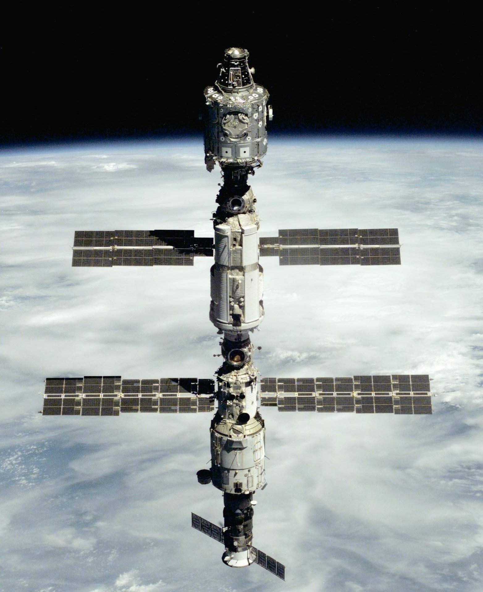

Estaciones Espaciales
Las estaciones espaciales son estructuras habitables que orbitan la Tierra y permiten realizar investigaciones científicas a largo plazo.
La Estación Espacial Internacional (ISS) es la más conocida, ocupada desde el año 2000.
Las estaciones espaciales son laboratorios que orbitan la Tierra, donde astronautas viven y trabajan durante largos periodos para estudiar el espacio y los efectos de la microgravedad.

Estación Espacial Internacional (ISS)
- Es la estación espacial más grande construida hasta ahora.
- Fue lanzada en 1998 y sigue en funcionamiento.
- Participan agencias como la NASA (EE.UU.), Roscosmos (Rusia), ESA (Europa), JAXA (Japón) y CSA (Canadá).
- Gira alrededor de la Tierra unas 16 veces al día.
¿Para qué sirven?
- Para hacer experimentos científicos en microgravedad.
- Para probar tecnología antes de enviarla a la Luna o Marte.
- Para estudiar cómo afecta el espacio al cuerpo humano.
- Como paso previo para futuras bases en otros planetas.
Volver al inicio